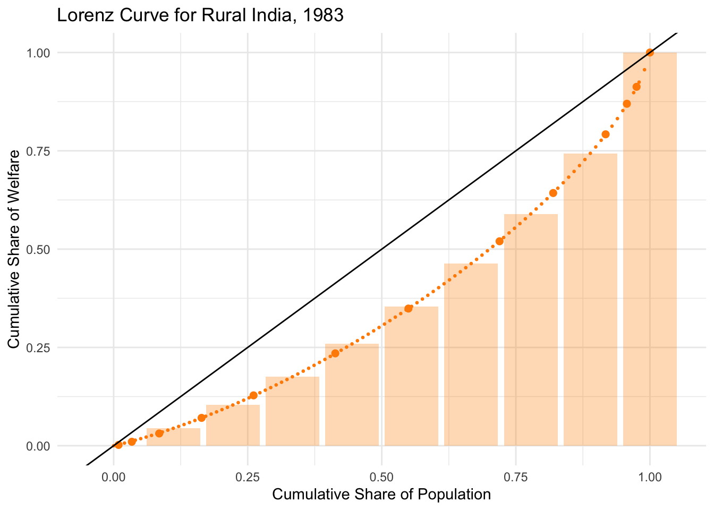

library(pipr)
library(tidyverse)Accessing poverty and inequality data from the World Bank in R
Part 1
Set-up
1 Introduction
1.1 The Poverty and Inequality Platform (PIP)
The World Bank helps low- and middle-income countries reduce poverty and produce data on poverty and inequality.
This gives the World Bank a unique access to poverty data.
Partly for that reason, the World Bank is the custodian of Sustainable Development Goals on ending poverty (SDG1) and reducing inequality (SDG10).
All this data is stored in the Poverty and Inequality Platform (PIP) at pip.worldbank.org.
{pipr}(link to repo) is a package which allows you to access the latest PIP data. It is basically an interface to the PIP API (link to API UI).
1.2 Plan
Part 1: overview of
{pipr}, functions, arguments, output.Part 1.1: core function:
get_stats().Part 1.2: advanced arguments:
fillgaps,nowcast,popshare,comparable_spell.Part 1.3: regional data estimates:
get_wb().Part 1.4: group data function:
get_gd().
Part 2: data replication and exercises/visualizations.
2 Accessing PIP in R
2.1 Install PIP
{pipr} has not been released in CRAN yet, so to access it you need to use another package, {devtools}, so you can install it directly from the github repository:
install.packages("devtools") # Install devtools
library(devtools) # Load devtools
devtools::install_github("worldbank/pipr") # Install pipr
library(pipr) # Load pipr2.2 Additional Packages
To run the code for this workshop you should also install some additional packages that help with data cleaning and visualization:
install.packages("dplyr", "purrr", "ggplot2") # Install dplyr (or tidyverse, if you have it)
library(dplyr)
library(ggplot2)
library(purrr)3 Country-level estimates
The core function of pipr is get_stats(), which retrieves country-level estimates of poverty and inequality metrics:
get_stats() |>
head(n=5)Pruning cache# A tibble: 5 × 44
region_name region_code country_name country_code year reporting_level
<chr> <chr> <chr> <chr> <dbl> <chr>
1 Sub-Saharan Africa SSA Angola AGO 2000 national
2 Sub-Saharan Africa SSA Angola AGO 2008 national
3 Sub-Saharan Africa SSA Angola AGO 2018 national
4 Europe & Central … ECA Albania ALB 1996 national
5 Europe & Central … ECA Albania ALB 2002 national
# ℹ 38 more variables: survey_acronym <chr>, survey_coverage <chr>,
# welfare_time <dbl>, welfare_type <chr>, survey_comparability <dbl>,
# comparable_spell <chr>, poverty_line <dbl>, headcount <dbl>,
# poverty_gap <dbl>, poverty_severity <dbl>, watts <dbl>, mean <dbl>,
# median <dbl>, mld <dbl>, gini <dbl>, polarization <dbl>, decile1 <dbl>,
# decile2 <dbl>, decile3 <dbl>, decile4 <dbl>, decile5 <dbl>, decile6 <dbl>,
# decile7 <dbl>, decile8 <dbl>, decile9 <dbl>, decile10 <dbl>, cpi <dbl>, …# Nicer to look at:
get_stats() |>
head(n=5) |>
DT::datatable(options = list(scrollX = TRUE))- Each row identfies a unique combination of
- country_code: ISO 3 code.
- year:
allfor all years, or numeric. - reporting_level: national, urban, rural.
- welfare_type: income, consumption.
3.1 Variables
There are a number of available variables:
colnames(get_stats()) # variables available [1] "region_name" "region_code" "country_name"
[4] "country_code" "year" "reporting_level"
[7] "survey_acronym" "survey_coverage" "welfare_time"
[10] "welfare_type" "survey_comparability" "comparable_spell"
[13] "poverty_line" "headcount" "poverty_gap"
[16] "poverty_severity" "watts" "mean"
[19] "median" "mld" "gini"
[22] "polarization" "decile1" "decile2"
[25] "decile3" "decile4" "decile5"
[28] "decile6" "decile7" "decile8"
[31] "decile9" "decile10" "cpi"
[34] "ppp" "pop" "gdp"
[37] "hfce" "is_interpolated" "distribution_type"
[40] "estimation_type" "spl" "spr"
[43] "pg" "estimate_type" And you can access info about those variables here:
get_aux("dictionary") |>
head(n=5)# A tibble: 5 × 2
variable definition
<chr> <chr>
1 region_name World Bank region name
2 region_code Three-letter World Bank abbreviation of world regions
3 year Year
4 country_name World Bank country name
5 country_code Three-letter ISO (alpha-3) country code system for international…# get_dictionary() # equivalent3.2 Auxiliary Data
get_aux() allows you to access to alist of auxiliary data and tables.
For instance, you can access GDP data used in the calculations:
get_aux("gdp") |>
filter(value > 0) |> # First line is a row of NAs...
head(n=5)# A tibble: 5 × 4
country_code data_level year value
<chr> <chr> <fct> <dbl>
1 ABW national 1986 16112.
2 ABW national 1987 18732.
3 ABW national 1988 22266.
4 ABW national 1989 24865.
5 ABW national 1990 25411.Or access a series of info about how the data is calculated. For example, incgrp_coverage:
get_aux("incgrp_coverage") |>
head(n=5)# A tibble: 5 × 3
year incgroup_historical coverage
<dbl> <chr> <dbl>
1 1981 LIC/LMIC 65.3
2 1982 LIC/LMIC 69.7
3 1983 LIC/LMIC 73.0
4 1984 LIC/LMIC 77.6
5 1985 LIC/LMIC 78.0Which returns a table of survey coverage for low and lower-middle income countries for any given year. This table shows how the coverage rule is applied: under this requirement, global poverty estimates are reported only if data are representative of at least 50 percent of the population in low-income and lower-middle-income countries.
3.3 Core estimates
We can have a closer look at the core estimates for a Country, e.g. Nigeria:
get_stats(country = "NGA") |>
select(c(country_code, year, poverty_line, headcount, mean, gini))# A tibble: 8 × 6
country_code year poverty_line headcount mean gini
<chr> <dbl> <dbl> <dbl> <dbl> <dbl>
1 NGA 1985 2.15 0.478 2.90 0.387
2 NGA 1992 2.15 0.524 2.86 0.449
3 NGA 1996 2.15 0.584 2.92 0.519
4 NGA 2003 2.15 0.479 2.92 0.401
5 NGA 2010 2.15 0.349 3.50 0.357
6 NGA 2012 2.15 0.338 3.55 0.355
7 NGA 2015 2.15 0.323 3.68 0.359
8 NGA 2018 2.15 0.309 3.66 0.351Note that the default poverty line is $2.15 (per capita, per day), in 2017 PPP-adjusted dollars, and the mean is expressed in the same way.
Obviously, you can request a different poverty line:
get_stats(country = "NGA",
povline = 1.9) |>
select(c(country_code, year, poverty_line, headcount))# A tibble: 8 × 4
country_code year poverty_line headcount
<chr> <dbl> <dbl> <dbl>
1 NGA 1985 1.9 0.413
2 NGA 1992 1.9 0.471
3 NGA 1996 1.9 0.528
4 NGA 2003 1.9 0.413
5 NGA 2010 1.9 0.278
6 NGA 2012 1.9 0.268
7 NGA 2015 1.9 0.255
8 NGA 2018 1.9 0.244You can loop the request to get multiple poverty lines, this is just one way to do it, using map_dfr() from the {purrr} package:
povlines <- c(1.9, 2.15, 3.2, 5.5)
NGA_estimates <- map_dfr(
.x = povlines,
.f = ~get_stats(country = "NGA", povline = .x)) |>
select(c(country_code, year, poverty_line, headcount, mean))
NGA_estimates# A tibble: 32 × 5
country_code year poverty_line headcount mean
<chr> <dbl> <dbl> <dbl> <dbl>
1 NGA 1985 1.9 0.413 2.90
2 NGA 1992 1.9 0.471 2.86
3 NGA 1996 1.9 0.528 2.92
4 NGA 2003 1.9 0.413 2.92
5 NGA 2010 1.9 0.278 3.50
6 NGA 2012 1.9 0.268 3.55
7 NGA 2015 1.9 0.255 3.68
8 NGA 2018 1.9 0.244 3.66
9 NGA 1985 2.15 0.478 2.90
10 NGA 1992 2.15 0.524 2.86
# ℹ 22 more rowsSo you can actually start working with these data:
# install.packages("plotly")
library(plotly) # You don't really need to install this, but it's cool..p <- NGA_estimates |>
ggplot(aes(x = year, y = headcount, color = factor(poverty_line))) +
geom_line() +
geom_point() +
labs(title = "Headcount Ratio by Poverty Line and Year, NGA",
x = "Poverty Line",
y = "Headcount Ratio",
color = "Year") +
theme_minimal()
ggplotly(p)You can also get multiple countries for a given year:
get_stats(country = c("ITA","NGA"), year=2018) |>
select(c(country_code, year, poverty_line, headcount, mean, gini))# A tibble: 2 × 6
country_code year poverty_line headcount mean gini
<chr> <dbl> <dbl> <dbl> <dbl> <dbl>
1 ITA 2018 2.15 0.0146 48.1 0.352
2 NGA 2018 2.15 0.309 3.66 0.3514 Advanced arguments
4.1 Fillgaps - Extrapolated and interpolated values
Some countries do not have data for all years, and pipr defaults to showing only the estimates generated using the actual survey data available.
However, we also calculated values for years where there is no data, using a combination of extrapolation and interpolation (we will see the methodology behind that in part 2).
You can use the fillgaps argument to get extrapolated and interpolated values.
# Default
get_stats(country = "ALB") |>
filter(year>2010) |>
select(c(country_code, year, poverty_line, headcount))# A tibble: 11 × 4
country_code year poverty_line headcount
<chr> <dbl> <dbl> <dbl>
1 ALB 2012 2.15 0.00621
2 ALB 2014 2.15 0.0102
3 ALB 2015 2.15 0.000961
4 ALB 2016 2.15 0.00139
5 ALB 2016 2.15 0.0580
6 ALB 2017 2.15 0.00393
7 ALB 2017 2.15 0.0526
8 ALB 2018 2.15 0.000481
9 ALB 2018 2.15 0.0389
10 ALB 2019 2.15 0
11 ALB 2020 2.15 0.000213# With estimates:
ALB_estimates <- get_stats(country = "ALB", fill_gaps = TRUE) |>
filter(year>2005) |>
select(c(country_code, year, poverty_line, headcount, estimation_type, estimate_type))
ALB_estimates# A tibble: 17 × 6
country_code year poverty_line headcount estimation_type estimate_type
<chr> <dbl> <dbl> <dbl> <chr> <chr>
1 ALB 2006 2.15 0.00400 interpolation projection
2 ALB 2007 2.15 0.00287 interpolation projection
3 ALB 2008 2.15 0.00200 survey actual
4 ALB 2009 2.15 0.00329 interpolation projection
5 ALB 2010 2.15 0.00451 interpolation projection
6 ALB 2011 2.15 0.00515 interpolation projection
7 ALB 2012 2.15 0.00621 survey actual
8 ALB 2013 2.15 0.00927 interpolation projection
9 ALB 2014 2.15 0.0102 survey actual
10 ALB 2015 2.15 0.000961 survey actual
11 ALB 2016 2.15 0.00139 survey actual
12 ALB 2017 2.15 0.00393 survey actual
13 ALB 2018 2.15 0.000481 survey actual
14 ALB 2019 2.15 0 survey actual
15 ALB 2020 2.15 0.000213 survey actual
16 ALB 2021 2.15 0.000213 extrapolation projection
17 ALB 2022 2.15 0 extrapolation projection Code
ggplot(data = ALB_estimates,
aes(x = year, y = headcount,
color = estimation_type,
shape = estimate_type)) +
geom_point(size = 3) +
geom_line(aes(group = poverty_line)) +
labs(title = "Poverty Headcount by Estimation and Estimate Type, ALB",
x = "Year",
y = "Headcount Ratio",
color = "Estimation Type",
shape = "Estimate Type") +
theme_minimal()4.2 Nowcast - Projected values
The nowcast argument allows you to get projected values for the most recent years. Note that nowcast = TRUE implies fillgaps = TRUE.
# With estimates:
ALB_estimates_now <- get_stats(country = "ALB", nowcast = TRUE) |>
filter(year>2005) |>
select(c(country_code, year, poverty_line, headcount, estimation_type, estimate_type))Code
ggplot(data = ALB_estimates_now,
aes(x = year, y = headcount,
color = estimation_type,
shape = estimate_type)) +
geom_point(size = 3) +
geom_line(aes(group = poverty_line)) +
labs(title = "Poverty Headcount by Estimation and Estimate Type, ALB",
x = "Year",
y = "Headcount Ratio",
color = "Estimation Type",
shape = "Estimate Type") +
theme_minimal()
4.4 Comparability (Income vs Consumption)
Metrics are calculated using either income or consumption data. The comparable_spell variable indicates whether the data is comparable across years within a country. welfare_type helps you identify whether the data is based on income or consumption.
CHN_estimates <- get_stats(country="CHN") |>
filter(reporting_level=="national") |>
select(year, headcount, comparable_spell, welfare_type)
CHN_estimates# A tibble: 22 × 4
year headcount comparable_spell welfare_type
<dbl> <dbl> <chr> <chr>
1 1981 0.918 1981 - 1987 income
2 1984 0.812 1981 - 1987 income
3 1987 0.674 1981 - 1987 income
4 1990 0.720 1990 - 2012 consumption
5 1993 0.656 1990 - 2012 consumption
6 1996 0.482 1990 - 2012 consumption
7 1999 0.461 1990 - 2012 consumption
8 2002 0.369 1990 - 2012 consumption
9 2005 0.223 1990 - 2012 consumption
10 2008 0.173 1990 - 2012 consumption
# ℹ 12 more rowsNote that if you add fill_gaps or nowcast, the comparable_spell variable will be set to NA:
get_stats(country="CHN", nowcast = TRUE) |>
filter(reporting_level=="national") |>
select(country_code, year, headcount, comparable_spell, welfare_type,
estimation_type, estimate_type) |>
filter(year %in% 1987:1995)# A tibble: 9 × 7
country_code year headcount comparable_spell welfare_type estimation_type
<chr> <dbl> <dbl> <chr> <chr> <chr>
1 CHN 1987 0.674 <NA> income survey
2 CHN 1988 0.607 <NA> income extrapolation
3 CHN 1989 0.732 <NA> consumption extrapolation
4 CHN 1990 0.720 <NA> consumption survey
5 CHN 1991 0.703 <NA> consumption interpolation
6 CHN 1992 0.679 <NA> consumption interpolation
7 CHN 1993 0.656 <NA> consumption survey
8 CHN 1994 0.586 <NA> consumption interpolation
9 CHN 1995 0.528 <NA> consumption interpolation
# ℹ 1 more variable: estimate_type <chr>So do your hormework (check welfare_type) before using the data!
5 Global and Regional estimates
The other core function is get_wb(). This function retrieves global and regional estimates. Each row identifies a region-year combination.
get_wb() |>
head(n=5)# A tibble: 5 × 14
region_name region_code year poverty_line headcount poverty_gap
<chr> <chr> <dbl> <dbl> <dbl> <dbl>
1 Eastern and Southern Afr… AFE 1981 2.15 0.520 0.221
2 Eastern and Southern Afr… AFE 1982 2.15 0.524 0.225
3 Eastern and Southern Afr… AFE 1983 2.15 0.529 0.229
4 Eastern and Southern Afr… AFE 1984 2.15 0.539 0.235
5 Eastern and Southern Afr… AFE 1985 2.15 0.547 0.240
# ℹ 8 more variables: poverty_severity <dbl>, watts <dbl>, mean <dbl>,
# spr <dbl>, pg <dbl>, estimate_type <chr>, pop <dbl>, pop_in_poverty <dbl>Which regions?
get_aux("regions") |>
head(n=5)# A tibble: 5 × 3
region region_code grouping_type
<chr> <chr> <chr>
1 Eastern and Southern Africa AFE africa_split
2 Western and Central Africa AFW africa_split
3 East Asia & Pacific EAP region
4 Europe & Central Asia ECA region
5 Latin America & Caribbean LAC region We will learn how to calculate regional level estimates in Part 2.
You can also get global estimates (region_code = "WLD):
world <- get_wb() |>
filter(year >= 1990, region_code %in% c("WLD","EAP","SSA"))
ggplot(world, aes(x = year,y = 100*headcount,color=region_code)) +
geom_line() +
labs(
title = "Global poverty, 1990-2022",
y = "Poverty rate (%)",
x = ""
)6 Group Data Functions
For some countries or years, we only have access to group data. An example of group data is available for you in {pipr}:
pipr::datt_rural |>
DT::datatable(options = list(scrollX = TRUE))These data are from rural India in 1983 and are used in one of the core methodology paper (Datt, 1998). Data are grouped monthly per capita consumption expenditure bins.
For this type of data, the function, get_gd() allows you to retrieve poverty metrics and/or the exact parameters used to calculate them.
For the metrics, use the argument estimate = "stats" and provide the requested mean and poverty line:
datt_mean <- 109.9
datt_povline <- 89get_gd(
cum_welfare = datt_rural$L,
cum_population = datt_rural$p,
requested_mean = datt_mean,
povline = datt_povline,
estimate = "stats"
)Found url in cache "c801084871ca35b599a8b76acf765e39"Cached value is stale; checking for updatesSaving response to cache "c801084871ca35b599a8b76acf765e39"# A tibble: 1 × 20
poverty_line mean median headcount poverty_gap poverty_severity watts gini
<dbl> <dbl> <dbl> <dbl> <dbl> <dbl> <dbl> <dbl>
1 89 110. 94.3 0.451 0.125 0.0476 0.165 0.289
# ℹ 12 more variables: mld <dbl>, polarization <dbl>, decile1 <dbl>,
# decile2 <dbl>, decile3 <dbl>, decile4 <dbl>, decile5 <dbl>, decile6 <dbl>,
# decile7 <dbl>, decile8 <dbl>, decile9 <dbl>, decile10 <dbl>For the Lorenz curve points, use the argument estimate = "lorenz" and the number of bins/data points:
get_gd(
cum_welfare = datt_rural$L,
cum_population = datt_rural$p,
estimate = "lorenz",
n_bins = 10
) |>
DT::datatable(options = list(scrollX = TRUE))Found url in cache "02542c98b50a7443cbf39ec8fba38d09"Cached value is stale; checking for updatesSaving response to cache "02542c98b50a7443cbf39ec8fba38d09"Code
lorenz_points_lq <- get_gd(datt_rural$L, datt_rural$p, estimate = "lorenz", lorenz = "lq")Found url in cache "ee4673f56b68da0f8a64f0c90975922c"Cached value is stale; checking for updatesSaving response to cache "ee4673f56b68da0f8a64f0c90975922c"Code
lorenz_points_lq_10 <- get_gd(datt_rural$L, datt_rural$p, estimate = "lorenz", lorenz = "lq", n_bins = 10)Found url in cache "5d7d5440168d8a849956e2f4ea94883b"Cached value is stale; checking for updatesSaving response to cache "5d7d5440168d8a849956e2f4ea94883b"Code
ggplot() +
geom_bar(data = lorenz_points_lq_10, aes(x = weight, y = welfare), stat = "identity", fill = "darkorange", alpha = 0.3) +
geom_point(data = datt_rural, aes(x = p, y = L), color = "darkorange", size = 2) +
geom_point(data = lorenz_points_lq, aes(x = weight, y = welfare), color = "darkorange", size = 0.5) +
geom_abline(intercept = 0, slope = 1, color = "black") +
labs(
title = "Lorenz Curve for Rural India, 1983",
x = "Cumulative Share of Population",
y = "Cumulative Share of Welfare"
) +
theme_minimal()
For the exact parameters used to calculate the poverty metrics, use the argument estimate = "params":
get_gd(
cum_welfare = datt_rural$L,
cum_population = datt_rural$p,
estimate = "params"
)Found url in cache "6d257e8577c2128dee84a591e6d5f9ee"Cached value is stale; checking for updatesSaving response to cache "6d257e8577c2128dee84a591e6d5f9ee"# A tibble: 2 × 16
lorenz A B C ymean sst sse r2 mse se_A se_B
<chr> <dbl> <dbl> <dbl> <dbl> <dbl> <dbl> <dbl> <dbl> <dbl> <dbl>
1 lq 0.888 -1.45 0.202 0.122 0.0846 3.51e-6 1.00 3.90e-7 0.00676 0.0193
2 lb 0.561 0.930 0.580 -2.50 11.0 3.25e-3 1.00 3.61e-4 0.0150 0.00554
# ℹ 5 more variables: se_C <dbl>, validity <lgl>, normality <lgl>,
# selected_for_dist <chr>, selected_for_pov <chr>